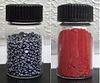

selenium

Definition: Selenium is a chemical element with the symbol Se and atomic number 34. It is a nonmetal (more rarely considered a metalloid) with properties that are intermediate between the elements above and below in the periodic table, sulfur and tellurium, and also has similarities to arsenic. It seldom occurs in its elemental state or as pure ore compounds in the Earth's crust. Selenium – from Greek selḗnē (σελήνη 'Moon') – was discovered in 1817 by Jöns Jacob Berzelius, who noted the similarity of the new element to the previously discovered tellurium (named for the Earth).
Source: Wikipedia
Wikipedia Page
Wikidata Page